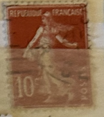
| SOURCE | TITLE| IMAGE MATCH | click to source page |
| eBay | FRANCE 162 - The Sower "La Sameuse" 1907 Red (pb19049) | eBay | 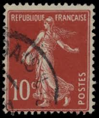 |
| Find Your Stamps Value | Sower: No Ground 40c Violet stamp price, value | 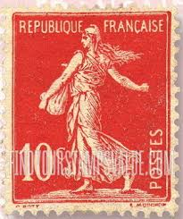 |
| Colnect | France : Stamps [Year: 1907] [1/5] : Colnect 📮 | 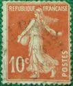 |
| Find Your Stamps Value | Value of republique rwandaise 30c stamps | 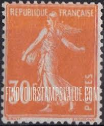 |
| Colnect | France : Stamps [Year: 1906] [1/4] : Colnect 📮 | 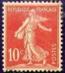 |
| lastdodo.com | Red Cross Stamp catalogue - LastDodo | 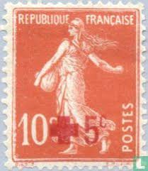 |
| Find Your Stamps Value | Find Your Stamps Value online: no philatelic skills required to find a stamp's worth! | 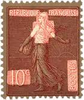 |
| La Semeuse cameé (sower), Republique Française Postes (France), 10 c, orange-red and carmine-red, stamp, O. Roty (engraver), Louis-Eugène Mouchon (designer), 1906 | 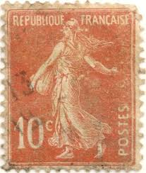 | |
| eBay | French Bronze Stamps for sale | eBay | 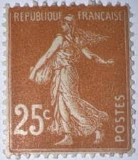 |
| Colnect | France : Stamps [Year: 1922] [1/3] : Colnect 📮 | 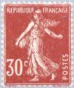 |
| Find Your Stamps Value | Value of 1914 postes persanes stamps | 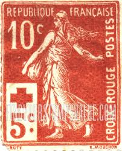 |
| eBay Australia | FRANCE 1914 RED CROSS Issue 10c+5c red - DOUBLE SURCH. Sc# B1var (Maury#147var) | eBay Australia | 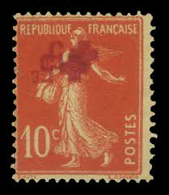 |
| Find Your Stamps Value | Value of red cloud 10c stamps | 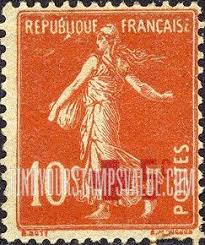 |
| Colnect | France : Stamps [Year: 1938] [1/10] : Colnect 📮 | 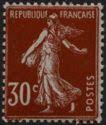 |
| HipStamp | France, 1907-37, Sower, 10c, sc#162, used | Europe - France & Colonies, General Issue Stamp / HipStamp | 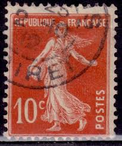 |
| HipStamp | France #162 10c Sower - Used | Europe - France & Colonies, General Issue Stamp / HipStamp | 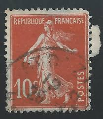 |
| eBay UK | Mint Hinged French & Colonies Stamps for sale | eBay UK | 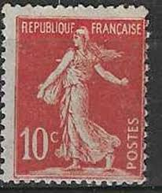 |
| Colnect | France : Stamps [Series: Semeuse solid background] [1/16] : Colnect 📮 | 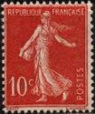 |
| Latinafy | La Sembradora Francia 10 Cents 1907 Common Paper Nv. S/G Yv. 138 | 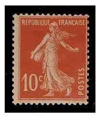 |
| HipStamp | France, Sc #162, 10c Used | Europe - France & Colonies, General Issue Stamp / HipStamp | 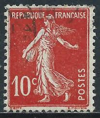 |
| Etsy | Antique French Rose Postcard: Hand-tinted Floral Photograph, the Sower Stamp - Etsy | 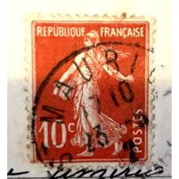 |
| eBay | France 10c Peace And Commerce Stamp | eBay | 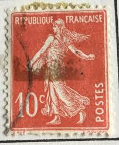 |
| pixels.com | French Postage Stamps Spiral Notebook by James Hill - Pixels | 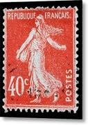 |
| eBay | Perfin France Semeuse Used Stamp A19P52F205 | eBay | 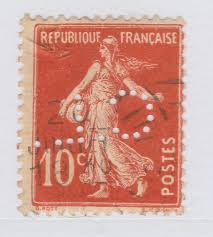 |
| eBay | Magenta Mint Hinged European Stamps for sale | eBay | 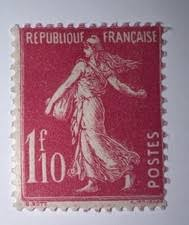 |
| 1916 Two Franc Coin Design and History | 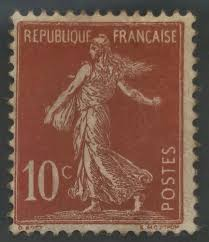 | |
| eBay | Perfin France Semeuse Used Stamp A19P52F221 | eBay | 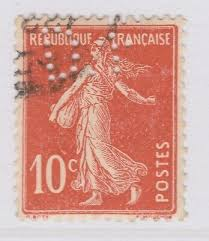 |
| Miraheze | Category:Military stamps - Stamp Encyclopedia | 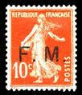 |
| HipStamp | France Sc#162 Used, 10c red, Semeuse solid background (1907) | Europe - France & Colonies, General Issue Stamp / HipStamp | 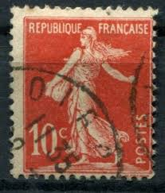 |
| HipStamp | France #162 Sower Used CV$0.30 | Europe - France & Colonies, General Issue Stamp / HipStamp | 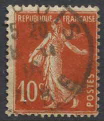 |
| The Itty Bitty Stamp Company | France Scott # 155 Used – The Itty Bitty Stamp Company | 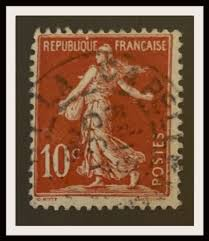 |
| eBay | France Stamp Type Semeuse N°129 Mint * MH (Slimmed) | eBay | 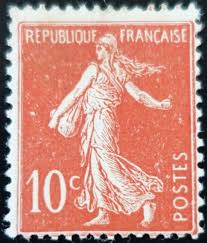 |
| French 10 euro cent coin design | 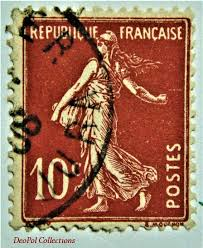 | |
| philatelienews.com | Home - Philatélie News | 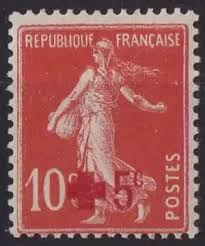 |
| French Philately | 1937 Yt 360 Type cameo Sower Sc 174 - French Philately - Stamps of France for Sale | 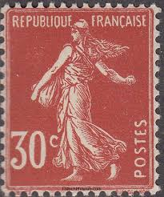 |
| eBay | Foxtimbre | Boutiques eBay | 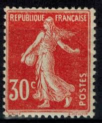 |
| HipStamp | France - #166 -Used- 1906 - Sower - 20c - SCV-0.20 | Europe - France & Colonies, General Issue Stamp / HipStamp | 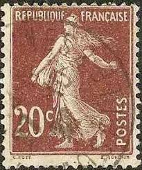 |
| eBay | Travelstamps: 1926 France Stamp #166 - 20c Sower Mint MOGH | eBay | 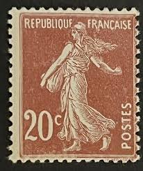 |
| eBay | FRANCE 1906-20 Sower 10c Red SC: 162 Used Stamp (a2) | eBay | 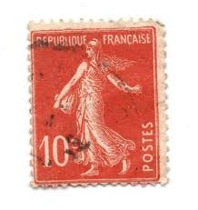 |
| PicClick UK | FRANCE 1903 10C pale red Sower Type II no shadow under R vf MINT hinged SG 314 £18.00 - PicClick UK | 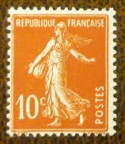 |
| franceandcolonies.org | The 10 Centimes Semeuse (Sower) – Part II | 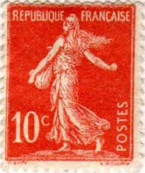 |
| eBay | France - 1925 -1926 - Sower - New Values - 15C - Used - #1 | eBay | 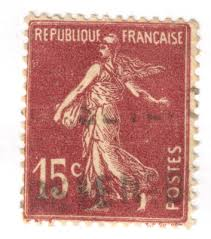 |
| eBay UK | French Red Cross Single Stamps for sale | eBay UK | 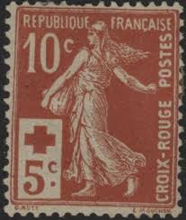 |
| Alamy | France stamp marianne hi-res stock photography and images - Alamy | 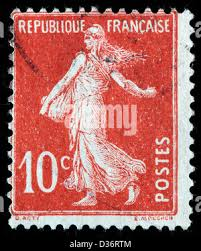 |
| eBay | France Num Yvert 227 ** MNH Surcharge Sower Year 1926 | eBay | 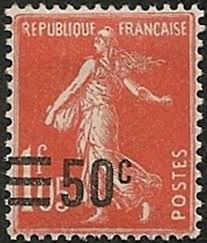 |
| eBay | Travelstamps: France Stamp Scott #182 - 1.05f Sower Mint MOGLH, SIGNED !! | eBay | 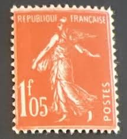 |
| eBay | France,1906-20 / Mariane / SC166 / Used | eBay | 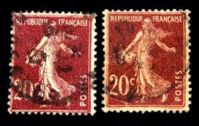 |
| Todocolección | francia 1907 - yvert nro. 138 - usado - Buy Antique stamps of France on todocoleccion | 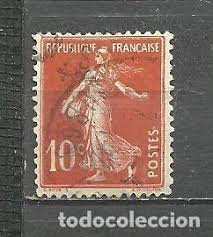 |
| ebid.net | France 1906 Seed Sower 10c Used Stamp. on eBid United States | 217322883 | 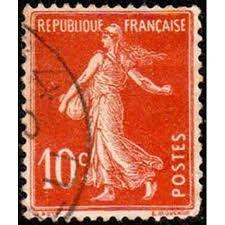 |
| HipStamp | Browse Products in Europe > France & Colonies / HipStamp | |
| eBay | France Semeuse 1924-26 40c Type II MH* Stamp A25P43F19688 | eBay | |
| HipStamp | France Type Sower 1907 10c Orange Red Type IC Used Stamp Y&T 138? A23P48F14034- | Europe - France & Colonies, Stamp / HipStamp | |
| eBay | Republique Francaise Postes 10c French/France Postage Stamp | eBay | |
| eBay | Republique Francaise 10c Postes Stamp French Stamp Very Hard To Find TKS157* | eBay | |
| eBay | Signed Calves - Stamp Type Semeuse Croix Rouge N°147 Mint ** Luxe MNH | eBay | |
| eBay | Perfin France Semeuse Used Stamp A19P52F222 | eBay | |
| eBay | FRANCE 152 - La Sameuse "1925 Vermilion" (pc24004) | eBay | |
| eBay | France Stamp of The Cross Red N° 147 mint MH | eBay | |
| eBay | 1903 10¢ France Stamp Repubiqué Française RARE, Unique, Free Shipping to US | eBay |